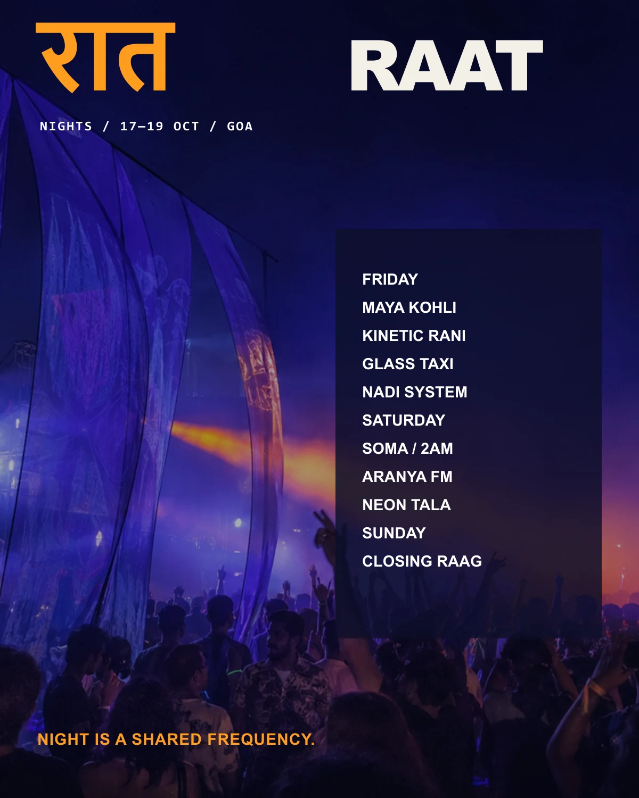
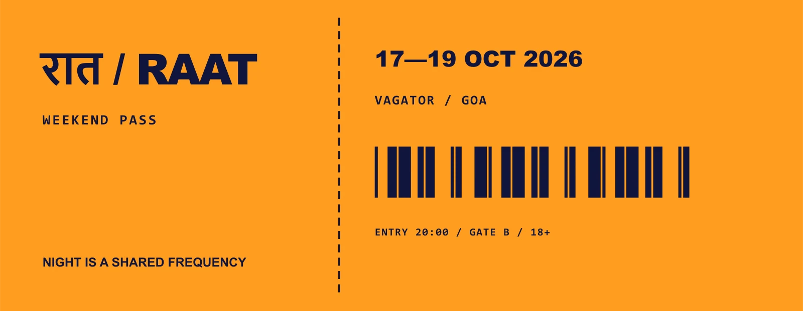
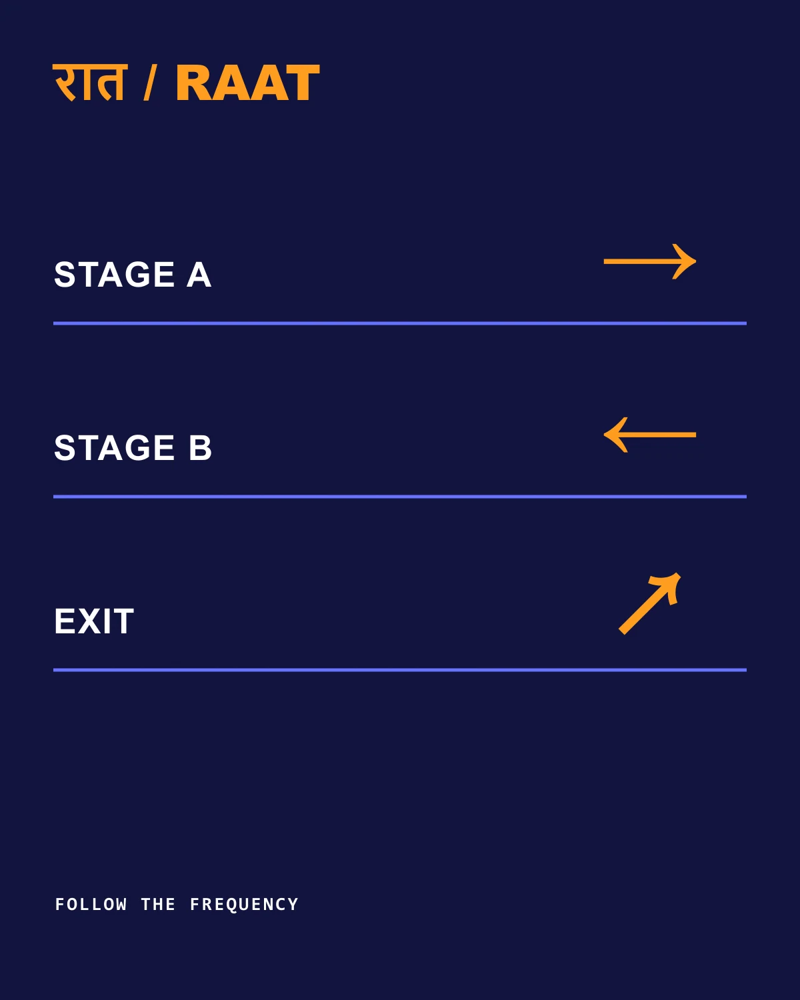
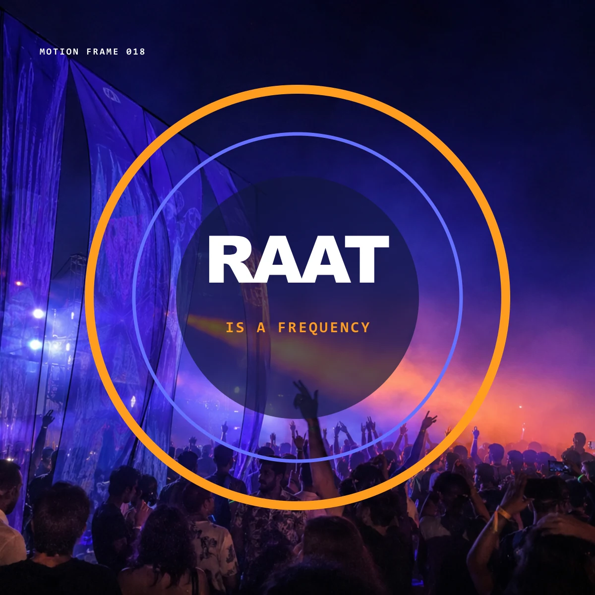
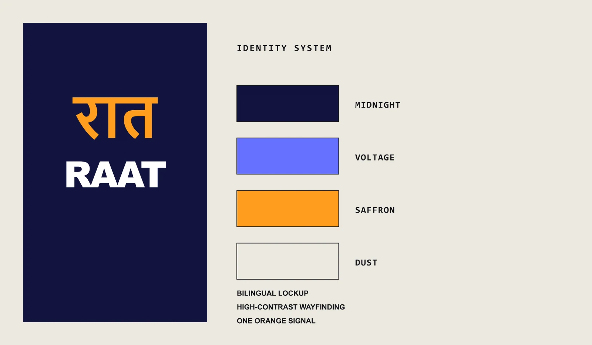

Typography
Archivo for English hierarchy, Nirmala UI for Devanagari, IBM Plex Mono for schedules and operational copy.
Self-initiated fictional festival / 2026
One night. Two languages. A shared frequency.
Festival identity / Information design / Wayfinding
View 5 applications ↓
The communication problem
Audience & direction
Independent-music audiences in Delhi and travelling listeners discovering hybrid South Asian lineups.
Midnight indigo holds the system together; saffron routes, frequency rings and the Hindi word रात give the event its pulse.
A bilingual lineup poster that keeps energy in the image and order in a dark information panel.

A high-contrast admission object using one perforation line to divide identity from logistics.

An environmental sign that keeps movement instructions dominant over festival styling.

A motion frame that converts the crowd into a broadcast field without obscuring the event name.

A restrained system board documenting the fixed elements behind the energetic applications.
Typography
Archivo for English hierarchy, Nirmala UI for Devanagari, IBM Plex Mono for schedules and operational copy.
Colour
Indigo, electric violet, warm saffron and pale stone.
Composition
Circles act as stages, radio waves and navigation. Strict columns keep every performer and time readable.
Image making
Long-exposure crowd photography, laser haze, barcode tickets and modular arrows.
Mixture formula
Selected alternate / Rejected direction
The first lineup poster placed Hindi and English on opposite halves. It implied two separate events, so the final lockups interlock both scripts inside one rhythm.
AI production disclosure
Crowd imagery was generated with AI. Festival, performers, schedule, bilingual hierarchy, symbols and applications are fictional and were authored for this concept.
A new brief starts here.
@akxhiiiiii / Instagram